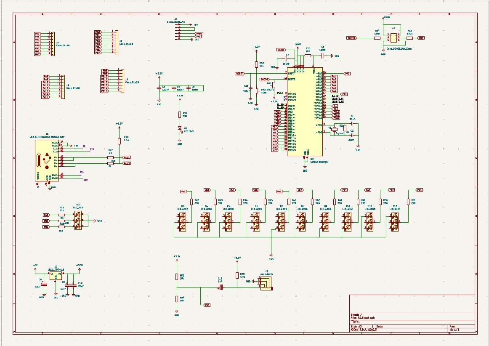
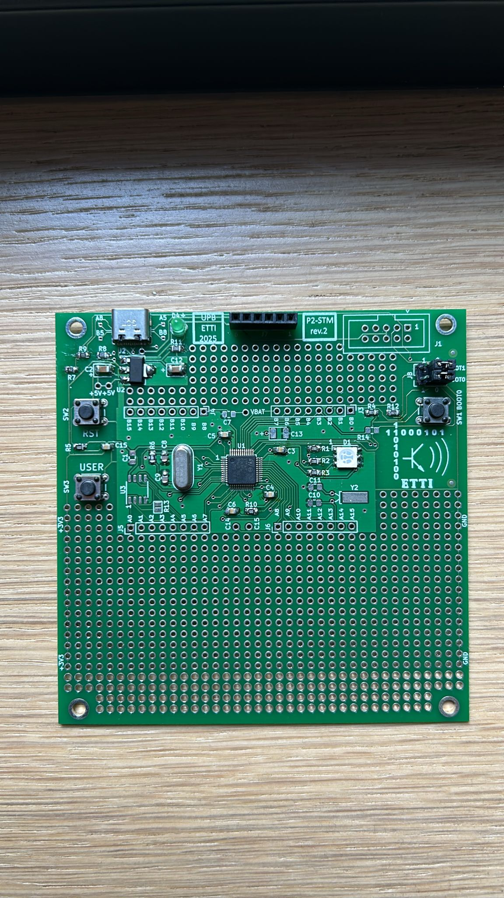
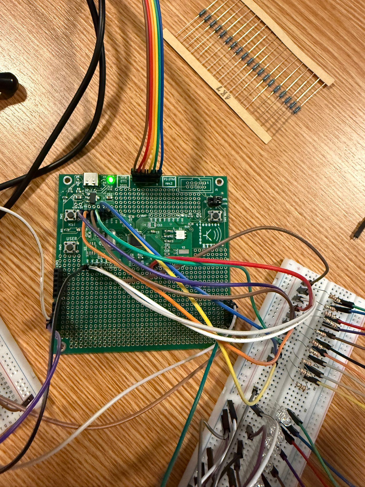
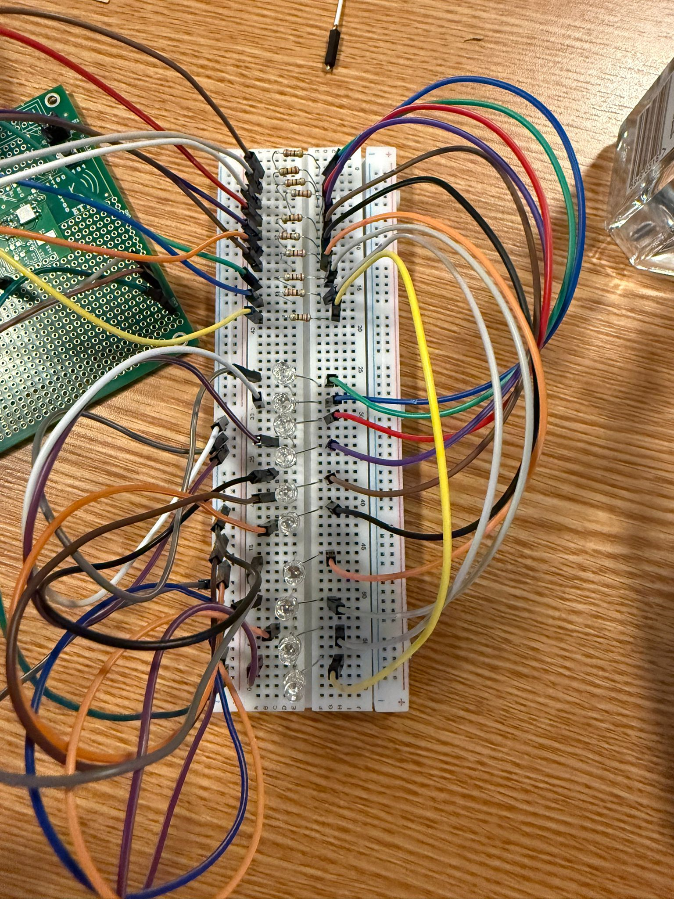
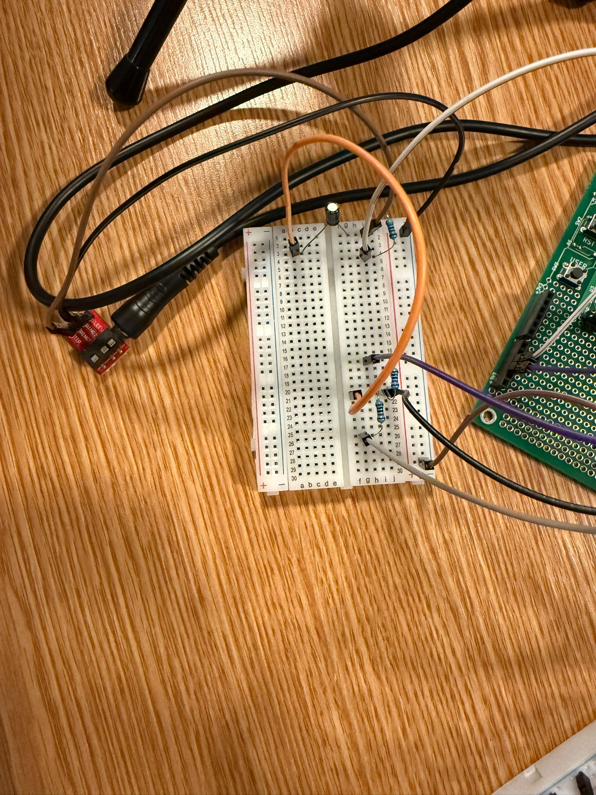
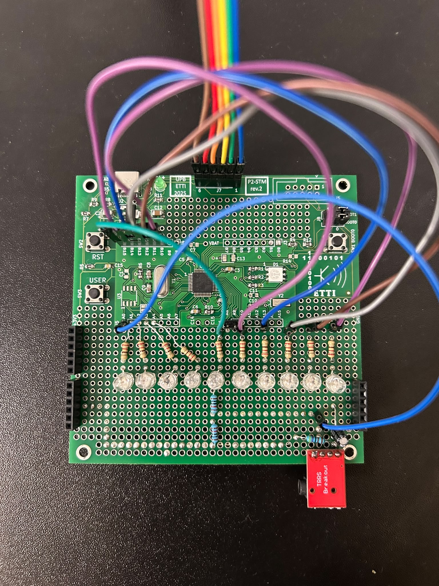
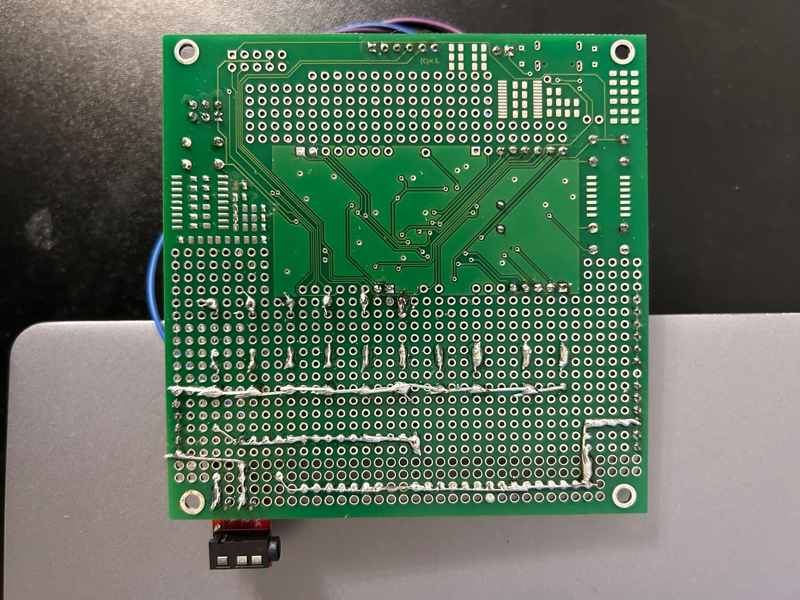
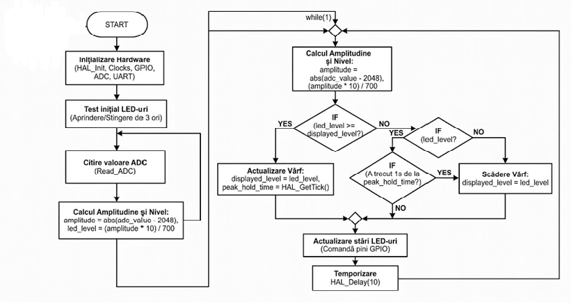

Student: Badiceanu, David, Stanciu | Grupa: 33 | Profesor coordonator: Mihai Stanciu
Proiectul nostru implementează un indicator de nivel audio (VU-Meter) realizat în jurul microcontrolerului pe 32 de biți STM32F103C8T6. Sistemul capturează semnalul acustic din mediul înconjurător prin intermediul unui microfon analogic și afișează intensitatea volumului în timp real pe o bară logică compusă din 10 LED-uri.
Interacțiunea utilizatorului cu placa și maparea exactă a componentelor hardware sunt realizate astfel:
while(1), înregistrarea semnalului de la microfon se face prin modificarea directă a regiștrilor ADC (ADC1->SQR3 și ADC1->CR2), evitând latențele funcțiilor clasice din librării. Se colectează un pachet compact de 200 de eșantioane într-o fracțiune de milisecundă.Dispozitivul este un indicator de nivel audio (VU-Meter) realizat în jurul microcontrolerului pe 32 de biți *STM32F103C8T6 (Blue Pill)*. Sistemul capturează semnalul acustic din mediul înconjurător prin intermediul unui microfon analogic și afișează intensitatea volumului în timp real pe o bară logica compusă din 10 LED-uri.

| Nr. Crt. | Denumire Componentă | Valoare / Model | Capsulă | Descriere / Rol în Proiect | Furnizor |
|---|---|---|---|---|---|
| 1 | Condensatori (C1, C3, C4, C5, C6, C15) | 100nF | 0805 | Decuplare alimentare subansamble / Filtrare zgomot de înaltă frecvență. | UPB |
| 2 | Condensatori (C2, C12) | 10uF | Tantal Case B | Filtrare stabilizator de tensiune (filtrare la intrarea/ieșirea sursei). | UPB |
| 3 | Condensatori (C8, C9) | 20pF | 0805 | Condensatori auxiliari pentru rezonatorul cuarț de 8MHz. | UPB |
| 4 | Rezistoare (R1, R2, R3, R11) | 220R | 0805 | Limitare curent pentru LED-urile onboard. | UPB |
| 5 | Rezistoare (R4, R12) | 100K | 0805 | Rezistențe de pull-up/pull-down pentru stabilirea nivelurilor logice fixe. | UPB |
| 6 | Rezistor (R5) | 10K | 0805 | Rezistență de control / Circuitul de Reset hardware. | UPB |
| 7 | Rezistor (R6) | 1M | 0805 | Rezistență de polarizare în paralel cu cristalul de cuarț. | UPB |
| 8 | Rezistor (R7) | 1.5K | 0805 | Configurare și activare linie USB (Pull-up pe linia de date D+). | UPB |
| 9 | Rezistoare (R8, R9) | 20R | 0805 | Protecție și adaptare de impedanță pentru liniile de date USB. | UPB |
| 10 | Rezistor (R10) | 10R | 0805 | Filtru de rețea (RC) pentru alimentarea analogică curată a ADC-ului. | UPB |
| 11 | Butoane (SW1, SW2, SW3) | Buton | THT 6mm | Butoane pentru control digital și Reset fizic al sistemului. | UPB |
| 12 | Cristal de cuarț (Y1) | 8MHz | HC-49 Vertical | Oscilator de tact extern principal pentru generarea frecvenței MCU (prin PLL). | UPB |
| 13 | Microcontroller (U1) | STM32F103CBT6 | LQFP-48 | Microcontrolerul principal pe 32 de biți (Nucleul algoritmului VU-Meter). | UPB |
| 14 | Stabilizator tensiune (U2) | LM1117S-3.3 | SOT-223 | Regulator LDO pentru stabilizarea tensiunii de la 5V la 3.3V necesari MCU. | UPB |
| 15 | LED RGB (D1) | LED RGB | 5050-6 | Indicator optic multifunctional onboard (status sistem). | UPB |
| 16 | LED Verde (D4) | LED Verde | THT 3mm | Indicator prezență tensiune alimentare (Power LED). | UPB |
| 17 | Conector Programare (J1) | SWDIO+Serial | IDC-2x04 | Interfață fizică pentru depanare (ST-Link) și comunicație serială. | UPB |
| 18 | Conector USB (J2) | USB Micro-B | Micro-B SMD | Conector fizic pentru alimentare placă și comunicație USB. | UPB |
| 19 | Barete Pini (J3, J4, J5, J6) | Conn 1x08 | Pini 2.54mm | Barete tată pentru extensia pinilor GPIO (ieșiri către LED-urile VU-Meter). | UPB |
| 20 | Baretă Magistrală (J7) | Conn 1x06 | Pini 2.54mm | Barete pini pentru magistrala dedicată perifericelor externe. | UPB |
| 21 | Baretă Boot (J8) | Conn 2x03 | Pini 2.54mm | Barete și jumperi pentru configurarea modului de Boot (Flash vs System). | UPB |
| 22 | Soclu Extensie (J11) | Mama 1x08 | THT | Soclu mamă destinat extensiilor hardware (ex. modul microfon). | UPB |
Fotografiile de mai jos demonstrează asamblarea manuală și progresivă a componentelor pe placa de proiect.






Aplicația software este dezvoltată în limbajul C, utilizând librăria hardware STM32Cube F1 HAL (Hardware Abstraction Layer). Rolul principal al algoritmului este de a prelua un semnal audio analogic, de a-i calcula amplitudinea în timp real și de a comanda o bară de 10 LED-uri pentru a vizualiza intensitatea sonoră (funcție de VU-Meter), integrând și un efect de „peak hold” (menținerea nivelului maxim).

Pentru implementarea temei, au fost configurate și utilizate următoarele resurse interne ale procesorului AVR:
Memoria Flash (program): S-a anticipat că cea mai mare parte a memoriei Flash va fi ocupată de codul generat automat pentru configurarea perifericelor (ceasuri sistem, GPIO, ADC1 și USART1) și de funcțiile din librăria STM32Cube F1 HAL. Codul algoritmului propriu-zis (animația de start, citirea ADC, detecția vârfului de semnal și scrierea pe porturi) ocupă un spațiu nesemnificativ. Din capacitatea totală de 128 KB Flash a microcontrolerului, s-a estimat o amprentă a codului de sub 15-20%.
Justificare implementare pe microcontroler: Deoarece valoarea analogică a semnalului audio este citită, redresată matematic față de offset-ul de 2048 și mapată instantaneu pe cele 10 LED-uri, nu este necesară stocarea eșantioanelor audio anterioare. Prin urmare, algoritmul nu folosește alocare dinamică de memorie și nu are nevoie de buffere circulare masive (cum ar fi matrici de date pentru procesarea FFT), operații care ar fi solicitat intens memoria RAM și Flash. Spațiul intern de memorie de care dispune cipul hardware depășește considerabil cerințele software ale VU-Meter-ului, asigurând o execuție stabilă în timp real.
În urma implementării hardware și software, sistemul VU-Meter bazat pe microcontrolerul STM32F103 a fost testat cu succes utilizând generatoare de semnal audio și piese muzicale variate. Principalele rezultate obținute includ:
Pe parcursul dezvoltării proiectului, au fost luate următoarele decizii tehnice pentru optimizarea sistemului: